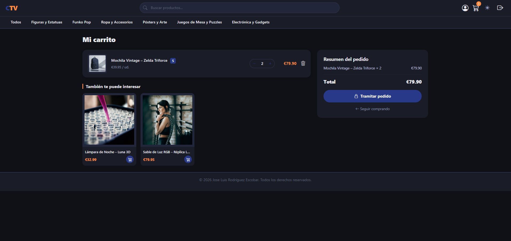
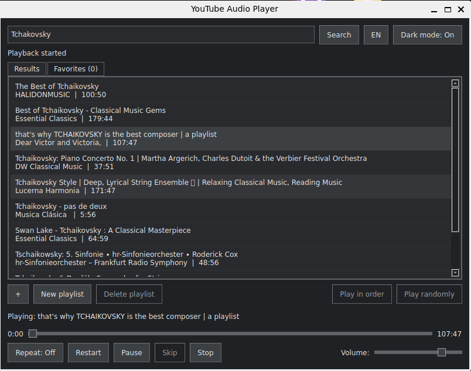

December 2025 — March 2026
Software Engineer at Acciosoft
El Ejido, Spain / Software engineering
Build and maintain software for clients since Landing Pages to fully functional e-commerce sites.
Software engineer / Almeria, Spain
I’m Jose Luis, a software engineer who enjoys learning about systems and software. I work across the stack, from data models to the details of an interface.
01 / Experience
A few teams and problems that have shaped the way I work.
El Ejido, Spain / Software engineering
Build and maintain software for clients since Landing Pages to fully functional e-commerce sites.
Almeria, Spain/ IT Consultant
My role was providing support to different teams across office. Creating bash and Python scripts for automation of processes.
02 / Selected work
A selection of things I’ve made, learned from, and continue to refine.

A website built for simulating a real e-commecer platform. In this project I came up with a fully functional site where you can buy products from a small bussines dedicated to the "geek" world. Built from scratch with Laravel and Angular 2, using bootstrap as css framework and MariaDB as my database.

An open-source project where my focus was to desing a fully functional audio player where you can fetch videos from youtube and stream the audio of said video. The project is still WIP as it is not yet fully functional on Windows. You can access and use this tool via Github.
03 / Toolkit
The languages, systems, and habits I reach for to get good work done.
04 / A little more
JLRE.I care about the craft behind good software: clear thinking, useful details, and systems that keep working after launch. Outside of work, you’ll find me reading or watching a movie, walking the city, or just looking at maps on the internet.
Have a good problem? Let’s talk